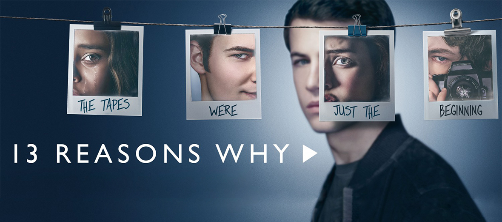

<section class="article-netflix py-5">
  <div class="container">
    <div class="row justify-content-center">
      <article class="col-sm-8">
        <h2>13 reasons why</h2>
        <h5>« Théorie du chaos. Ça a l’air dramatique, mais ça ne l’est pas. » (Brian Yorkey), 09 février 2021</h5>
        <p>
         « 13 Reasons why » est une série dramatique, composée de 4 saisons avec un total de 49 épisodes d’une durée de 1h00 (environ) chacun, réalisée par Brian Yorkey et diffusée pour la première fois en 2017.
        </p>
        <br>

        <div class="article_img">
          
        </div>

        <br>

          <p>
            <strong class="emphase">De quoi ça parle :</strong> Après le suicide d’Hannah Baker, Clay reçoit une série de cassettes enregistrées par son amie contenant les 13 raisons de son geste fatal.
          </p>
          <br>
          <p>
            <strong class="emphase">Mon avis :</strong> J’ai été surprise et conquise par cette série, par les thématiques abordées, par le scénario, la réalisation et le jeu des acteurs.
            <br>
            Les personnages sont touchants, tous autant qu’ils sont.
            <br>
            Les thèmes sont durs, profonds et traités avec respect et humilité sans pour autant tomber dans le larmoyant. Une avalanche de sentiments vous tombe dessus, la colère, la tristesse, l’empathie… Rien ni personne ne vous laissera indifférent.
            <br>
            La série a créé beaucoup de polémique, notamment elle a été décriée comme étant un appel au suicide, à la haine ou encore au meurtre. Personnellement je la vois comme un outil pédagogique à disposition des parents d’ados qui pourront être amenés à rencontrer les situations évoquées au sein de la série. C’est à mon sens, un excellent moyen d’ouvrir le dialogue sur des thèmes parfois tabous ou qu’on ne sait comment aborder.
            <br>
            En conclusion, je dirai que c’est une très bonne série abordant différents problèmes que peuvent rencontrer les jeunes. Pour autant, il ne faut pas laisser ces derniers regarder la série seul, sans en débriefer avec eux.
          </p>

          <br>
          <p>
            <strong class="emphase">Anecdote :</strong> « 13 Reasons why » est l’adaptation du roman de Jay Asher publié en 2007 et sous le titre « 13 raisons » en France.
            <br>
            Katherine Langford a été nommée au Golden Globe de la Meilleure Actrice pour sa performance dans l’interprétation d’Hannah Baker.
          </p>

        <br>

        <iframe width="560" height="315" src="https://www.youtube.com/embed/LVVMvRpmu0s" title="YouTube video player" frameborder="0" allow="accelerometer; autoplay; clipboard-write; encrypted-media; gyroscope; picture-in-picture" allowfullscreen></iframe>

        <br>

        <p class="signature text-end"><strong>Angèle</strong></p>
      </article>
    </div>
  </div>
</section>


